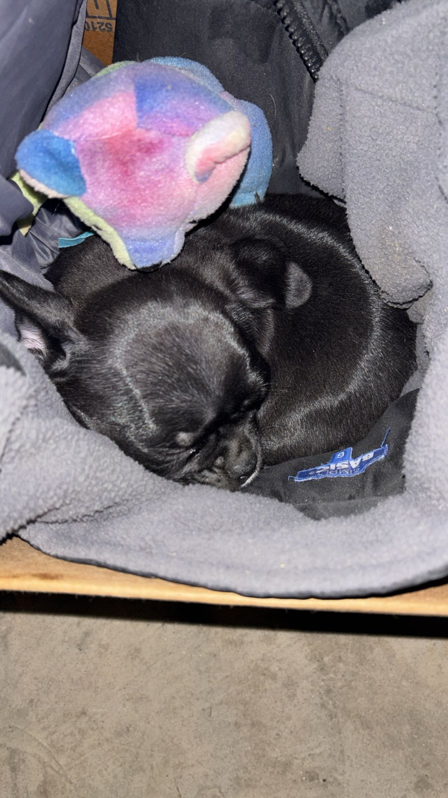
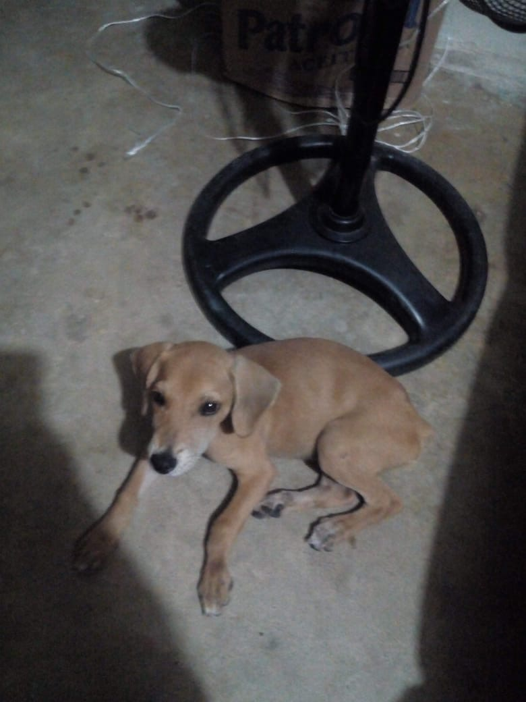

🐶 Animalitos adoptados 🐱
Conoce algunos de los animalitos que fueron adoptados y ahora tienen un hogar.

Laila 🐶
Edad: 1 año y medio
Es muy temerosa de los demás, pero es buena con los niños y muy juguetona. Fue rescatada el 1 de enero de 2026 después de los fuegos pirotécnicos de Año Nuevo.

Luna 🐱
Edad: 1 año
Es tranquila y cariñosa. Llegó a la vida de una familia responsable porque su familia anterior ya no podía tener más animales en casa.

Balu 🐶
Edad: 3 años
Es muy alegre, divertido e inquieto. Fue rescatado de una secundaria, donde su mamá tuvo a sus bebés y él nació.